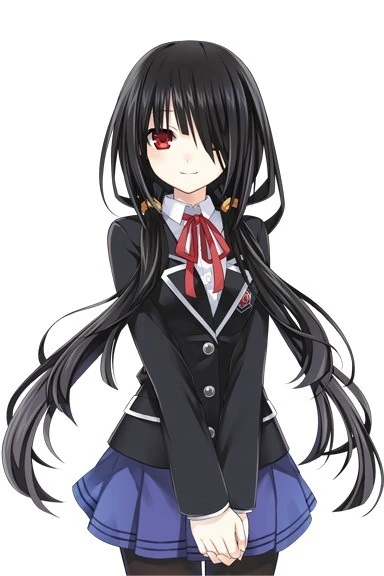

| Kanji | 時崎 狂三 |
|---|---|
| Romaji | Tokisaki Kurumi |
| Birthday | June 10th |
| Age | 17-18 (Physically) |
| Status | Alive |
| Gender | Female |
| Height | 157 cm |
| Species | Human Spirit (Formerly) |
| Hair Color | Black |
| Eye Color | Red Gold Clock (Left Eye; Spirit) |
| Nicknames |
|
| Affiliations |
|
| Occupation |
|
| Rank | S-Class Spirit |
| Novel Debut | Volume 3 |
| Anime Debut | Episode 5 (Possible Cameo) Episode 7 (Actual Appearance) |
| Japanese VA | Asami Sanada |
| English VA | Alexis Tipton |
Summary
Kurumi Tokisaki (時とき崎さき 狂くる三み, Tokisaki Kurumi) adalah Roh ketiga yang muncul. Karena tindakan brutalnya, dia disebut sebagai Roh Terburuk (最悪の精霊, Saiaku no Seirei). Dia juga Spirit pertama yang tampil sebagai antagonis dalam seri Date A Live.
Mana Takamiya melaporkan bahwa Kurumi Tokisaki adalah Roh paling berbahaya yang pernah diketahui. Dia telah membunuh lebih dari 10.000 orang, dengan perkiraan hanya sekitar 100 yang menjadi korban Spacequake. Dengan demikian, gelarnya sebagai Roh Terburuk berasal dari membunuh korbannya secara pribadi dengan tangannya sendiri.
Kurumi Tokisaki telah menggunakan metode yang tidak disebutkan dan tidak dapat dijelaskan untuk secara pribadi pindah ke kelas Shido Itsuka sehingga dia bisa lebih dekat dengannya. Tujuan dan alasannya untuk bergerak sederhana: konsumsi Shido Itsuka, dan dengan melakukan itu, mendapatkan Reiryoku yang disegel di dalam tubuhnya. Selama Kurumi menjadi siswa SMA Raizen, dia hampir berhasil mengkonsumsi Shido. Namun, dia terpaksa mundur setelah kewalahan oleh kekuatan destruktif Kotori Itsuka. Kurumi mengklaim bahwa itu karena dia tidak siap untuk menghadapinya, tetapi kemudian berpendapat bahwa dia bisa mengalahkan Kotori jika dia memiliki lebih banyak waktu yang disimpan.
Kemudian, terungkap (di akhir Volume 4) bahwa Kurumi melakukan percakapan dengan makhluk misterius yang membuatnya tampak seperti sedang berbicara pada dirinya sendiri. Di sini, dia menyatakan tujuan sebenarnya adalah untuk mencari Shido agar dapat menggunakan Taruhan Yud Peluru Kedua Belasnya untuk melakukan perjalanan 30 tahun ke masa lalu dan membunuh Roh Pertama. Untuk mencapai itu, dia membutuhkan sejumlah besar Reiryoku yang tidak dia miliki, itulah sebabnya dia ingin mengkonsumsi Shido. Shido memegang Reiryoku dari tiga Roh di dalam dirinya, cukup baginya untuk bisa menggunakan Peluru Kedua Belas dan masih memiliki kekuatan yang tersisa untuk membunuh Roh Pertama.
Appearance
Kurumi adalah gadis dengan pesona luar biasa yang digambarkan anggun dan sopan. Ia memiliki kulit mutiara, rambut hitam panjang (sering diikat ekor kembar), serta mata kanan merah dan mata kiri berbentuk jam emas yang muncul saat ia berubah ke bentuk Roh. Tingginya 157 cm dengan ukuran B85/W59/H87.
Dalam bentuk Roh, ia mengenakan Gaun Astral bergaya Lolita Gotik merah-hitam, lengkap dengan pita besar dan kerah. Setelah menyerap Kristal Sephira Nia, gaunnya mendapat elemen mirip pakaian biarawati. Sebagai manusia, ia biasanya memakai seragam Raizen High School atau gaun Lolita hitam sederhana.
Perubahan dari masa lalu: dulu ia menutupi mata kiri dengan penutup mata, kini hanya dengan rambut. Saat menjadi mahasiswa, ia mulai memakai anting dan pita merah untuk mengikat rambut sebagian, sehingga mata kirinya terlihat.
Personality
Kurumi adalah sosok yang penuh paradoks: di satu sisi ia mampu menampilkan citra gadis polos dan sopan, namun di balik itu tersembunyi pribadi yang gila, kejam, dan dingin terhadap manusia. Ia memandang manusia sebagai sumber energi sekali pakai, meski tindakannya sering diarahkan pada orang-orang jahat seperti pemerkosa atau pelaku kekerasan hewan. Tujuan besarnya adalah kembali ke masa lalu untuk membunuh Roh Pertama, mencegah Spacequake, dan menyelamatkan jutaan nyawa—sebuah misi yang menunjukkan keadilan bengkok namun tetap bernilai.
Di sisi lain, Kurumi masih menyimpan kelembutan dan kerinduan akan kehidupan normal. Ia memiliki titik lemah terhadap hewan kecil, terutama kucing, dan pernah menunjukkan belas kasih yang berlawanan dengan sifat psikotiknya. Kemampuannya memanggil klon dari masa lalu menambah kompleksitas karakternya, memperlihatkan sisi lama yang kadang memalukan baginya. Meski membenci disebut “orang baik,” Kurumi tetap memiliki kualitas penebusan yang membuatnya unik: seorang Roh yang berdiri di antara kegilaan dan keadilan, dengan ciri khas ucapan "Ara, Ara" (あら、あら) dan tawa "Kihihihihi" (きひひひひ)
History
Setelah menjadi Roh, perjalanan Kurumi semakin kelam dan penuh tragedi. Awalnya ia percaya pada Mio Takamiya yang mengaku sebagai “sekutu keadilan” dan memberinya Kristal Sephira Zafkiel. Namun, setelah mengetahui bahwa sahabatnya Sawa ternyata adalah Roh yang dibunuh oleh Mio, Kurumi mulai menyadari kebenaran pahit: Mio adalah Roh Pertama yang menipu manusia untuk menjadi inang Kristal lalu membunuh mereka. Dari sinilah tekad Kurumi terbentuk—menggunakan kekuatan peluru waktunya untuk kembali ke masa lalu dan menghentikan Mio, demi mencegah lahirnya Roh dan Spacequake.
Sejak itu, Kurumi menciptakan jaringan klon dirinya untuk mengumpulkan informasi dan waktu, meski harus memangsa banyak manusia. Aksinya menarik perhatian DEM dan membuatnya berulang kali bertarung dengan Mana Takamiya, yang tanpa sadar hanya membunuh klon-klonnya. Di tengah perjalanan, sosok Phantom muncul dan memberitahunya tentang Shido Itsuka, membuat Kurumi menyusup ke SMA Raizen untuk memastikan kebenaran cerita tersebut. Dari titik ini, kisah Kurumi semakin rumit: ia bukan sekadar Roh yang kejam, melainkan sosok dengan tujuan besar, terjebak antara dendam, keadilan, dan harapan akan penebusan.
Media
- Light Novel
- Appearances:
- Volumes 3-4, 6-7, 10-13, 15-22
- Date A Live Encore 1-11
- Date A Live Material 1-2
- Date A Live Another Route
- Magic Detective Kurumi Tokisaki's Case Files
- Magic Detective Kurumi Tokisaki's Memoirs
- Magic Detective Kurumi Tokisaki's Death Certificate
- Mention:
- Volume 14
- Appearances:
- Anime
- Appearances:
- Date A Live: Episodes 7-10, 12
- Date A Live II: Episodes 1, 6-10
- Date A Live II OVA
- Date A Live III: Episodes 7-12
- Date A Live IV: Episodes 1-2, 8-12
- Date A Live V: Episodes 1-3, 5, 8-12
- Appearances:
- Manga
- Appearances:
- Date A Origami
- Date A Party
- Appearances:
- Game
- Appearances:
- Date A Live: Rinne Utopia
- Date A Live: Arusu Install
- Date A Live Twin Edition: Rio Reincarnation
- Date A Live: Ren Dystopia
- Date A Live: Spirit Pledge
- Appearances:
- Movie
- Appearances:
- Date A Live Movie: Mayuri Judgement
- Appearances:
Powers and Abilities
Kurumi dikenal sebagai Roh Terburuk karena brutalitas dan kekuatan uniknya. Ia memiliki pasukan klon yang membuatnya hampir mustahil dikalahkan dalam pertempuran panjang, bahkan tercatat sebagai Roh paling merusak saat menyerang markas DEM Jepang. Keistimewaannya, Kurumi adalah satu-satunya Roh yang menguasai dua Kristal Sephira, sehingga mampu mengakses dua Malaikat sekaligus dan menjadikannya lawan paling berbahaya.
Zafkiel (Zaphkiel)
Zafkiel adalah Angel Kurumi yang memanipulasi waktu. Angel ini memiliki 12 peluru bernama sebagai berikut:
- Aleph (一の弾アレフ, Arefu)
- Bet (二の弾ベット, Beto)
- Gimmel (三の弾ギメル, Gimeru)
- Dalet (四の弾ダレト, Daretto)
- Hei (五の弾ヘイ, Hei)
- Vav (六の弾ヴァブ, Vavu)
- Zayin (七の弾ザイイン, Zain)
- Het (八の弾ヘト, Hetto)
- Tet (九の弾テト, Tetto)
- Yud (十の弾ユッド, Yuddo)
- Yud Aleph (十一の弾ユッド・アレフ, Yuddo Arefu)
- Yud Bet (十二の弾ユッド・ベート, Yuddo Bēto)
Rasiel
Rasiel adalah Angel kedua Kurumi yang berbentuk buku raksasa. Buku ini berisi pengetahuan tentang masa depan dan masa lalu, memungkinkan Kurumi melihat berbagai kemungkinan.
Wizard
Kurumi juga memiliki kemampuan sebagai Wizard, memungkinkan ia menggunakan sihir dan Realizer untuk memperkuat kekuatannya.
Quotes
"My name is Tokisaki Kurumi. ...I am a Spirit."- Kurumi Tokisaki
"......Fu, fu......Really now, Shido-san, is really, gentle......huh."- Kurumi Tokisaki to Shido Itsuka
"I am the worst Spirit, the nightmare that haunts humanity."- Kurumi Tokisaki
"To live longer, I must take the time from others. That's the price of my existence."- Kurumi Tokisaki
Trivia
- Kurumi adalah Spirit pertama yang muncul sebagai antagonis dalam seri Date A Live
- Namanya "Kurumi" berarti "walnut" dalam bahasa Jepang, yang melambangkan kerasnya karakter
- Ia memiliki lebih dari 10.000 korban pribadi, bukan hanya korban Spacequake
- Kurumi sangat menyukai makanan manis, terutama cokelat
- Ia sering menggunakan kata "Ara ara" dalam dialognya
- Kurumi adalah salah satu karakter paling populer dalam franchise Date A Live
- Ia memiliki IQ yang sangat tinggi dan sangat cerdas dalam taktik
- Kurumi mengoleksi pistol sebagai hobi
References
- Date A Live Volume 3 - Novel kōsuke tachibana
- Date A Live Anime Episode 7 - "Kurumi Tokisaki"
- Official Date A Live Character Profiles
- Date A Live Encyclopedia